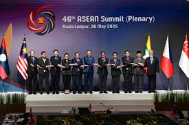

Thailand–Cambodia War 2025
Published July 26, 2025
Reason Behind War

The Preah Vihear temple is the main reason behind this conflict... [content continues]
Army Comparison

- Thailand fields about 100 M109A5 howitzers, ...
- Cambodia counters with around 50 upgraded T-72 tanks, ...
Thailand and the US - Old Friends
Thailand has leaned on the U.S. for decades...
Cambodia and China: A Growing Partnership
Cambodia has turned to Beijing—big roads, bridges, and now, military kit...
What’s Next:
ASEAN’s scrambling to calm things down... [etc]
Stay tuned for more stories from around Southeast Asia on our Articles page.